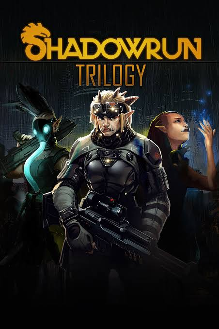

Description:
The Shadowrun Trilogy comprises 3 cult tactical RPG games taking place in a dystopian cyberpunk future in which magic has re-awakened, bringing back to life creatures of high fantasy.
Shadowrun Returns
The unique cyberpunk-meets-fantasy world of Shadowrun has gained a huge cult following since its creation over 30 years ago. Nearly 10 years ago, creator Jordan Weisman returned to the world of Shadowrun, modernizing this classic game setting as a single player, turn-based tactical RPG. In the urban sprawl of the Seattle metroplex, the search for a mysterious killer sets you on a trail that leads from the darkest slums to the city’s most powerful megacorps. You will need to tread carefully, enlist the aid of other runners, and master powerful forces of technology and magic in order to emerge from the shadows of Seattle unscathed.
Shadowrun Dragonfall - Director's Cut
In 2012, magic returned to our world, awakening powerful creatures of myth and legend. Among them was the Great Dragon Feuerschwinge, who emerged without warning from the mountains of Germany, unleashing fire, death, and untold destruction across the countryside. It took German forces nearly four months to finally shoot her down - and when they did, their victory became known as The Dragonfall. It’s 42 years later - 2054 - and the world has changed. Unchecked advances in technology have blurred the line between man and machine. Elves and trolls walk among us, ruthless corporations bleed the world dry, and Feuerschwinge’s reign of terror is just a distant memory. Germany is splintered - a stable anarchy known as the “Flux State” controls the city of Berlin. It’s a place where power is ephemeral, almost anything goes, and the right connections can be the difference between success and starvation. For you and your team of battle-scarred shadowrunners, there’s no better place to earn a quick payday. Now, a new threat is rising, one that could mean untold chaos and devastation. One that soon has you and your team caught on the wrong side of a deadly conspiracy. The only clue: whispers of the Dragonfall. Rumors that the Great Dragon Feuerschwinge may still be alive, waiting for the right moment to return…
Shadowrun Hong Kong - Extended Edition
HONG KONG. A stable and prosperous port of call in a sea of chaos, warfare, and political turmoil. The Hong Kong Free Enterprise Zone is a land of contradictions - it is one of the most successful centers of business in the Sixth World, and home to one of the world’s most dangerous sprawl sites. A land of bright lights, gleaming towers, and restless spirits where life is cheap and everything is for sale. As an ex-con living in Seattle, you try to make an honest living but when your foster begs you to meet him in China, things turn grim and you find out the police are trying to arrest you. And by arrest, they mean to kill you on sight! Build your team of Shadowrunners, mercenaries with big personalities who can fight using mystical or technical powers, and turn the tables on the elite corporate and the police. Through real-time exploration and turn-based action, you will be met with deadly conspiracy, corporate greed, Triads, social segregation, and gang wars.
